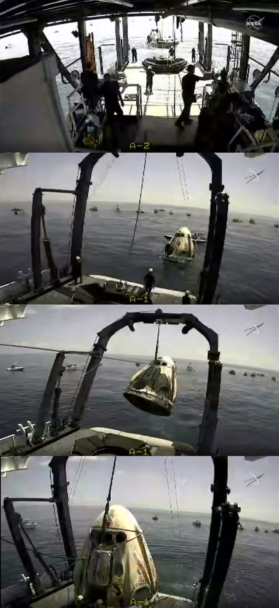

Dimostrato
Prove di fuga dalla rampa e durante l’ascesa.
Motori · Scheda tecnica 10
La propulsione di fuga integrata in Crew Dragon. Otto motori devono allontanare rapidamente la capsula da una situazione pericolosa durante il lancio.
Stato al 10 ottobre 2026: Operativo
Leggi i dati Controlla le fonti
Riferimento: documenti citati a fondo pagina, letti con le rispettive date. Stato editoriale al 10 ottobre 2026.
Il sistema è incorporato nei lati della capsula. La fuga richiede propulsione, rilevazione dell’emergenza e una sequenza che prepari il successivo ritorno in sicurezza. La semplice accensione di un motore non dimostra l’intera funzione.
Le idee iniziali comprendevano un atterraggio propulsivo Dragon. Lo sviluppo operativo consolidò il ritorno con paracadute. L’incidente di prova del 2019 portò a modifiche e verifiche prima del trasporto umano.
Il profilo nominale e quello di emergenza hanno condizioni differenti. La prova dalla rampa del 2015 non corrisponde alla configurazione definitiva dei paracadute né sostituisce la prova di fuga in volo.
Prove di fuga dalla rampa e durante l’ascesa.
Sistema di sicurezza della configurazione Crew Dragon certificata.
L’atterraggio propulsivo Dragon non è un servizio nominale qualificato.

Consultazione editoriale: 10 ottobre 2026. Le date dei singoli documenti sono distinte dalla data della scheda.